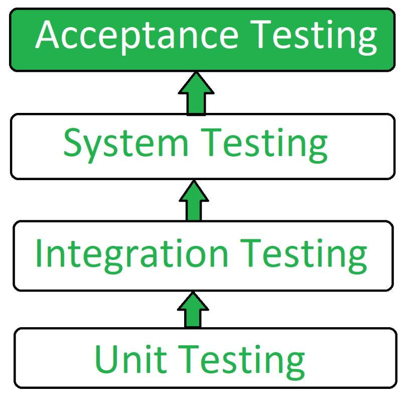
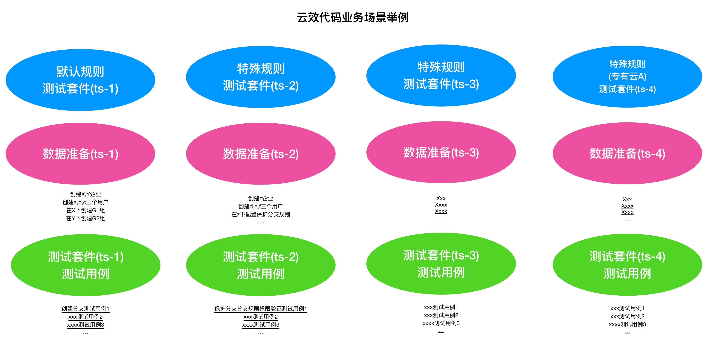

Why Acceptance Testing is so important to us(Chinese)?
`This article is written in Chinese. `
No good testing, no engineer culture.1. 定义
2. 定义之外
这里面有几点需要进一步说明的。
第一，何为“合规性”？
合规性可以理解为“符合规定”或者“符合规矩”， 那么，是“什么A”来符合“什么B”的规矩呢？ 直接来说， 系统反馈要满足规则合理性的规矩，或具象来说：
-
“系统的输入和输出”要符合“系统规则”的规矩；
-
“产品的输入和输出”要符合“产品规则”的规矩；
-
“接口的输入和输出”要符合“接口规则”的规矩；
第二，何为交付和验收，我理解的区别是什么？以及我个人的倾向叫法是什么？
交付与验收最大的区别是，交付本身更有有抽象物质的含义，甚至是原子性的含义，并且是结果无关化的定义，我们经常说我来交付某接口，或者我来交付一个方法，或者说我本周做了三次交付。但是，如果说我本周做了三次验收，这完全是不同的含义。
另一个我推荐叫做“交付测试”而不是“验收测试”的原因是，我们测试面对的实体是“交付”而不是“验收”，这点很容易理解。
第三，如何测试一个系统是否“合格”？
合格有很多定义，不同的人也有不同的定义。对于我个人来说，“合格”就是我很“清楚的知道”，我认知内的、已经交付的、会对系统产生影响的、这些东西会不会让我“死掉”。
或者简单说，让我“死掉”的问题是我们认知之外的问题，而不是我们认知之内的、已识别的问题。
3. 杀虫剂悖论（pesticide paradox）
在软件测试中有一种称为杀虫剂悖论（pesticide paradox）的现象，即对软件进行越多的测试，那么该软件对软件测试人员的测试就越具有免疫力。
杀虫剂不满足于当下99.99的软件系统，这可能还是保守的估算，我们可以看下自己团队的交付比率与测试比率即可，在你于其他人试图辩论杀虫剂悖论的时候，很可以你已经因为“认知内问题”所“死掉”，当然，也有运气成分， 这就是上面“清楚的知道”的另一层含义。
4. 与集成测试的区别
软件测试技术，划分为不同的阶段，，一方面保障不同的阶段的软件系统的质量，同时保障不同的阶段的软件系统的可用性。

第一区别，交付测试包含集成测试，如图，测试从底层向上层，依次是单元测试→集成测试→系统测试→交付测试， 交付测试是软件交付之前最后一道保障，再之后便是实际的使用了。
第二区别：集成测试只能保障覆盖集成，或者说保证业务的响应在系统与系统间协作是没有问题的，但是无法全面保障UAT级别的交付质量。
5. 交付测试类型
-
User Acceptance Testing (UAT)
-
Business Acceptance Testing (BAT)
-
Contract Acceptance Testing (CAT)
-
Regulations Acceptance Testing (RAT)
-
Operational Acceptance Testing (OAT)
这其中我最应该关注的是“User Acceptance Testing”。
6. 该如何写出好的交付测试？
-
第一：测试套件(test suite)不单单是一个集合。
测试套件和其中的测试用例，需要使用预设计的测试过程来运行。 测试不是杂乱无章的，相反需要精细的思考和设计，这样才能最大程度的保证维护和编写测试用例的效率。
套件是来分类测试用例的，我认为不应该把“区分业务模块的测试套件”作为组织测试用例的唯一方式，在当前系统的复杂度下是不可行的，我们需要考虑系统的基础规则、默认规则/特殊规则、亦或是共有云、专有云等等，通过最初的系统性的分析和设计，最终决定测试套件的设计，否则是没有逻辑的，也没有扩展性的、难以固化的。 造成这种局面，本质问题是没有充足的思考，或者是没有分析出问题的本质和业务的规律，进而也就不知道哪里是该固化的，哪里是该扩展的，最终的结果一定就是用例看起来其实是一直在修改和添加，但实际上是非常难以维护，也无法持久，失去了测试本该具备的优雅性。
-
第二：测试数据（test data）也需要设计。
测试数据是老生常谈的问题，这里我也想说下我的看法， 我根据测试数据的不同类别和特点，总结了三点原则：
测试套件和测试数据的关系： 1:1对应性、运行独立性、数据隔离性。
测试套件与测试数据是一一对应的，不是1对多也不是多对多，我们要保证在套件级别下的数据的内聚，才能保证特定测试用例的维护被框定在了一个固定的数据变更和套件的范围。如果无法进行一一对应，那么很明显，这应该属于一个新设计的套件。
还有一点很重要的是，运行的独立性， 独立性第一含义就是，测试套件只应该依赖自身或者低级测试套件中的数据，而不应该依赖高级别或者同级别中的数据。例如，仓库分支如果是属于低级测试套件，那么保护分支则属于高级别的测试套件。 独立性的第二个含义是， 各自套件应该均可以独立并且单独运行的，例如基础套件、特殊规则的套件、亦或是公有云的套件、各个专有云的套件。
另外一个是尽量保证测试套件依赖数据的隔离性，防止因为数据的污染，导致不同的测试套件之间产生影响，同时这也就破坏了运行独立性。隔离性还有一个好处是，当测试套件执行完毕后，测试结果数据不但但是数据，更是直接的业务结果，例如页面或者系统行为，这让测试结果与业务结果的比较更加清晰。
套件数据初始化应该进行抽象和提前。
应该在测试用例执行前完成初始化，例如如果是一个toB的公有云SaaS服务，首先应该准备企业数据、企业成员数据、帐号数据、以及一些基本的领域模型，在我们团队的领域就是仓库、组、角色、权限等等。
套件数据的初始化，应该伴随“写(W)”测试用例完成统一。
测试中的基础数据，不应该在测试用例的执行过程中进行创建和初始化的操作，这样会很容易导致测试用例的不可重复性遭到破坏。 通过伴随（w）测试用例的执行，通常可将二者进行统一。
例如： 我们需要测试 A→X、B→Y、C→Z 三个无权限用户，相关角色变化对应的测试用例，那么A B C应该作为套件基础数据进行初始化，X Y Z是在套件中的用例完成变化，注意这个行为并没有新的数据产生。同时我们希望测试 D E F三个用户在另外一个业务上的差异化表现， 我们应该创建新的用户，而不是复用A B C三个用户，因为这破坏了测试数据结果在业务面的所见即所得。
-
第三，充分利用snapshots，高效编写测试用例
成功执行测试的预期结果通常的步骤如下:：
-
使用预先确定的数据执行测试用例；
-
记录实际结果；
-
将实际结果与预期结果进行比较；
-
确定了测试结果pass or not pass；
可以看出，测试的本质是expect=actual, 基于技术和业务特点，我们的expect通常也可以是不同的形式，例如命令行执行命令，我们关注的是返回是否是0； 对于HTTP API调用，我们关注的是http status code； 对于前端展示，我们关注的是整个页面的dom加载和样式。
这其中建立和维护snapshots机制，可以充分发挥这部分的优势，特别是在API测试和前端测试中，面对不同的预期结果，我们可以使用snapshots来记录实际结果，并且对比实际结果和预期结果，从而确定测试结果是否通过。因为越真实的测试场景，测试的结果自然就越准确。
-
第四：一个具体的案例

这样做的优势有如下：
-
1. 固化： 默认规则会第一阶段完成固化，特殊性的规则也会随之固化。
-
2. 内聚： 基础规则和特殊规则，完成内聚，例如修改保护分支的规则， 我们只需要修改测试套件TS-2部分即可，对其他的部分不产生任何影响。
-
3. 灵活： 例如某企业专有云版本定制化了能力或者修改了规则。对于改专有云自动化测试，我们可以在测试套件TS-4中，完成扩展。 我们交付和后续升级时，即可直接执行TS-1与TS-4套件，结果通过即可进行交付。